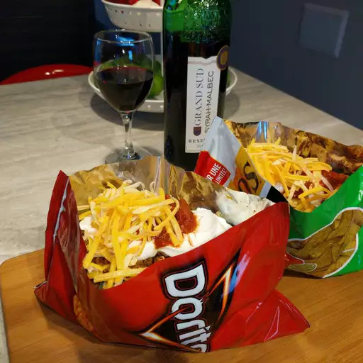

Taco In A Bag

Description
I love these walking taco bags, and my family loves them too! I had this recipe at the Covered Bridge Festival in Indiana. The chip bag serves as a shell for the tacos.
Ingredients
- 1 pound lean ground beef
- 3/4 cup water
- 1 1oz package taco seasoning mix
- 4 2.5oz packages corn chips
- 2 cups shredded lettuce
- 1 cup shredded cheddar cheese
- 1 chopped fresh tomato
- 1/2 cup sour cream
- 1/3 cup salsa
Steps
- Cook and stir ground beef in a large skillet over medium heat until browned and crumbly, 7 to 10 minutes. Drain excess oil. Mix in water and taco seasoning. Bring to a boil, then reduce the heat and simmer for 5 minutes, stirring occasionally.
- Gently crush corn chips in the sealed bags. Snip one top and one bottom corner off each bag, then cut open along the side edge. Spoon equal amounts of beef, lettuce, Cheddar, tomato, sour cream, and salsa into each bag on top of crushed chips. Serve in the bag and eat using a fork.